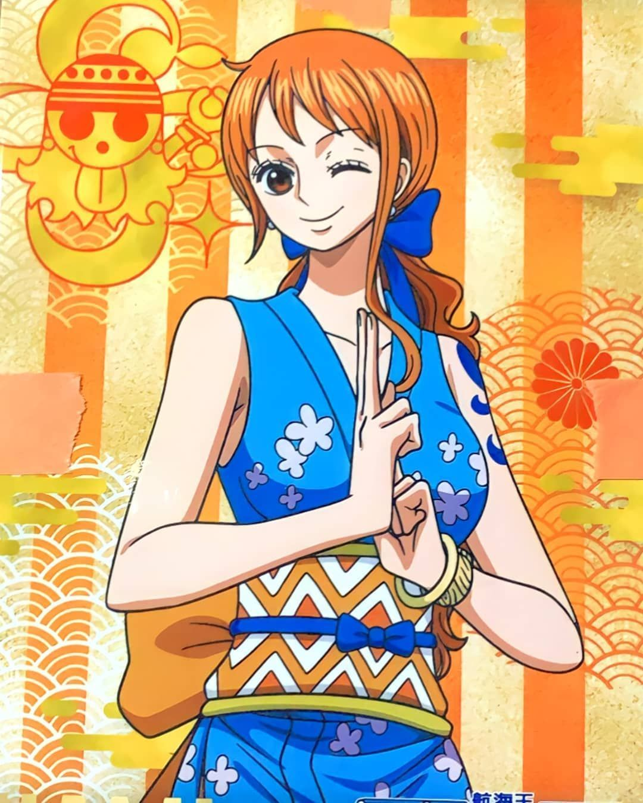

Alias: Kucing Pencuri. Jabatan: Navigator. Tebusan/Bounty: ฿366,000,000
Nami si "Kucing Pencuri" (ナミ Nami) adalah seorang bajak laut dan navigator dari kelompok Bajak Laut Topi Jerami. Dia di besarkan di Desa Cocoyasi di East Blue dan menjadi anggota ketiga kru topi jerami setelah kekalahan Arlong. Sebelum bergabung, Nami dikenal sebagai pencuri yang ulung. Impiannya adalah untuk dapat memetakan seluruh dunia. Dia memiliki nilai bounty sebesar 16.000.000 setelah peristiwa di Enies Lobby. Setelah Bajak Laut Topi Jerami berhasil mengalahkan Keluarga Donquixote, Nami mendapat kenaikan bounty menjadi 66.000.000.
Nami adalah seorang gadis muda yang menarik, tinggi sedang dan bertubuh langsing dengan rambut oranye sebatas leher dan mata cokelat muda. Dia memiliki tato baling-baling dan jeruk mikan di bahu kiri, menggantikan lambang bajak laut Arlong, tato lamanya yang ia pakai saat masih menjadi anggota bajak laut Arlong.
Nami sangat menyukai fashion dan sering berganti-ganti pakaian. Kebanyakan pakaiannya menampilkan kata-kata dengan empat huruf seperti "MODE", "GOLD" atau "EVIL". Kadang-kadang dia juga sering mengenakan bikini yang menunjukkan keseksiannya serta memiliki anting-anting bermata bulat. Pakaiannya berpasangan dengan beberapa macam rok atau celana ketat panjang maupun pendek dengan ciri khusus memiliki semacam dua bulatan berwarna pada tiap-tiap sisi. Dia juga memiliki sebuah Log Pose yang dikenakan di pergelangan tangan kirinya dan sebuah gelang emas pemberian kakak perempuannya, Nojiko. Dia menggunakan sepatu hak tinggi dan tidak tampak berpengaruh pada kecepatannya berjalan atau saat bertempur.
Nami bertemu Luffy di Kota Orange, pada cerita Buggy. Disini dia bergabung sebagai navigator sebagai bentuk kerjasama atas hartanya. Pada cerita Baratie, Nami kabur dari kru di tengah-tengah kemelut dan membawa kapal Going Merry. Dia kabur sambil membawa harta mereka dan juga harta Johnny dan Yosaku.
Luffy dkk. mengejar Nami di Desa Kokoyashi. Kemudian Luffy menghentikan Nami yang sedang menusuk lambang Arlong di bahunya sambil menangis dalam kemarahan, Luffy menerima permintaan tolong dalam kesedihan Nami. Setelah pertempuran besar dan menghancurkan Arlong Park, Nami bergabung secara resmi di bawah bendera Topi Jerami. Dia meninggalkan semua uangnya di rumah dan pergi tanpa berkata apa-apa. Ketika menuju kapal, Nami lari melewati semua warga dan mencuri semua dompet mereka. Warga kaget dan berteriak pada Nami dan Nami membalasnya dengan kata “aku pergi dulu, jaga diri kalian”. Hali ini membuat ekspresi berbeda pada kru seperti Usopp yang berkata kalau dia tidak berubah, Luffy yang tertawa, Sanji yang memujinya dan Zoro yang berkata kalau dia pasti akan mengkhianati mereka lagi.
Nami adalah navigator dan kartografer serta klimatolog yang handal dan profesional. Dia punya kemampuan untuk mengetahui cuaca dan perubahannya (terutama di Grand Line. Juga dapat meramal cuaca dan badai yang tidak terduga yang sering muncul di Grand Line dengan instingnya serta suhu tubuhnya. Dia juga pencuri dan copet yang hebat. Seperti mencuri semua dompet penduduk desa dan mencuri kunci tanpa sepengetahuan mereka. Dada Nami cukup besar. Ukuran bra nya adalah 36-D. Nami selalu memakai bikini dan jarang mengenakan bra.